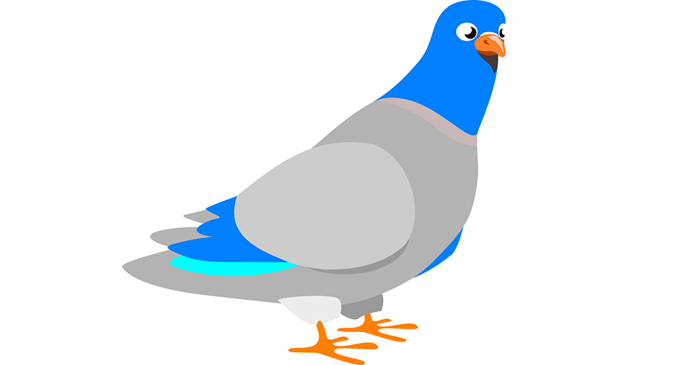

Le HTTPS expliqué avec des pigeons voyageurs

Ce texte est une traduction de l’article HTTPS explained with carrier pigeons écrit par Andrea Zanin
La cryptographie peut être un sujet complexe à appréhender. C’est généralement rempli de démonstrations mathématiques. A moins de travailler dans le développement de systèmes cryptographiques, la majorité de cette complexité n’est pas nécessaire pour comprendre ce qu’il se passe au plus haut niveau.
Si vous avez ouvert cet article en espérant créer le prochain protocole HTTPS, je suis désolé de vous dire que les pigeons ne seront pas suffisants. Dans le cas contraire, préparez-vous un café et profitez de l’article.
Alice, Bob et … des pigeons ?
Chaque activité que vous effectuez sur Internet (lire cet article, acheter des trucs sur Amazon, uploader des photos de chat) peut être résumée au fait d’envoyer et recevoir des messages vers et depuis un serveur.
Cette notion pouvant être un peu abstraite, imaginons plutôt que ces messages sont livrés par des pigeons voyageurs. Cela peut sembler très arbitraire, mais croyez moi, le HTTPS fonctionne de la même manière, quoiqu’un peu plus rapidement.
De plus, au lieu de parler de serveurs, clients et hackers, nous parleront d’Alice, Bob et Mallory. Si ce n’est pas la première fois que vous tentez de comprendre les concepts de la cryptographie, vous reconnaîtrez certainement ces noms car ils sont très largement utilisés dans la littérature technique.
Une première communication très simple
Si Alice souhaite envoyer un message à Bob, elle attache le message sur la patte du pigeon voyageur et l’envoie à Bob. Bob reçoit le message, le lit et tout va bien.
Mais que ce passe-t-il si Mallory intercepte le pigeon d’Alice en vol et change le message ? Bob n’aurait aucune manière de savoir que le message envoyé par Alice a été modifié durant le voyage.
C’est comme cela que fonctionne le HTTP. Ca fait peur hein ? Je n’enverrais jamais mes identifiants bancaires en HTTP, et vous ne devriez pas non plus.
Un code secret
Que se passe-t-il désormais si Alice et Bob sont plus rusés ? Il se mettent d’accord sur le fait d’écrire leurs messages en utilisant un code secret. Ils décaleront chaque lettre de 3 positions dans l’alphabet. Par exemple D → A, E → B, F → C. Le texte “secret message” devient donc “pbzobq jbppxdb”.
Désormais, si Mallory intercepte le pigeon, elle ne sera plus capable de modifier le message en quelque chose d’intelligible, et encore moins d’en comprendre sa signification, car elle ne connait pas le code utilisé. Bob, lui, peut simplement appliquer le code à l’envers et déchiffrer le message où A → D, B → E, C → F. Le texte chiffré “pbzobq jbppxdb” retrouve donc sa forme originale de “secret message”.
Victoire !
Cette technique est appelée la cryptographie à clé symétrique, car si vous savez comment chiffrer un message, vous savez comment le déchiffrer également.
Le code décrit ci-dessus est plus communément connu sous le nom de Chiffre de César. Dans la vie réelle, nous utilisons des codes bien plus sophistiqués et complexes, mais l’idée principale reste la même.
Comment définir la clé ?
La cryptographie à clé symétrique est très sécurisée si personne d’autre à part l’envoyeur et le receveur ne sait quelle clé est utilisée. Dans le cas du Chiffre de César, la clé est le nombre de lettres de décalage appliqué à chaque lettre du message. Dans notre exemple, nous avons utilisé un décalage de 3, mais nous aurions pu également utiliser 4 ou 12.
Le problème survient lorsqu’Alice et Bob ne se sont pas rencontrés avant de commencer à s’envoyer des messages par pigeon interposé, car il n’ont eu aucune possibilité de définir une clé de manière sécurisée. S’ils envoient la clé dans le message, Mallory pourrait intercepter le message et découvrir la clé. Cela permettrait à Mallory de lire ou modifier le message comme elle le souhaite avant et après qu’Alice et Bob commencent à chiffrer leurs messages.
C’est l’exemple type d’une attaque **de l’homme du Milieu **(Man In The Middle Attack) et la seule façon de l’éviter est de changer complètement de système de chiffrement.
Des pigeons transportant des boîtes
Face à ce problème, Alice et Bob décident d’un système encore plus sécurisé. Quand Bob veut envoyer un message à Alice, voici la procédure qu’il suivra :
Bob envoie un pigeon à Alice sans aucun message.
Alice renvoie le pigeon portant une boîte avec un cadenas ouvert, tout en gardant la clé.
Bob place le message dans la boîte, referme le cadenas, et envoie la boîte à Alice.
Alice reçoit la boite, l’ouvre avec sa clé, et lit le message.
De cette manière, Mallory ne peut pas modifier le message en interceptant le pigeon, car elle ne possède pas la clé. La même procédure est suivie par Alice lorsqu’elle souhaite envoyer un message à Bob
Alice et Bob viennent d’utiliser ce qui est plus communément connu sous le nom de cryptographie à clé asymétrique. Le côté asymétrique venant du fait que même si vous pouvez chiffrer un message (fermer le cadenas), vous ne pouvez pas le déchiffrer (ouvrir une boîte cadenassée). Dans le langage technique, la boîte est connue sous le nom de clé publique, et la clé pour l’ouvrir sous le nom de clé privée.
Comment faire confiance à la boîte ?
Si vous avez bien suivi, vous avez peut-être compris que nous avons toujours un problème. Lorsque Bob reçoit cette boîte ouverte, comment peut-il être certain que celle-ci vient d’Alice et que Mallory n’a pas intercepté le pigeon et échangé la boîte avec une boîte dont elle possède la clé ?
Alice décide donc de signer la boîte. De cette manière, lorsque Bob la recevra, il pourra vérifier la signature et avoir la certitude que c’est bien Alice qui lui a envoyé.
Certains d’entre vous pourraient se demander comment Bob est capable de vérifier la signature d’Alice en premier lieu ? Excellente question. Alice et Bob ont également rencontré ce problème, et ils ont décidé qu’au lieu de laisser Alice signer la boîte, Ted s’en chargera.
Mais, qui est Ted ? Ted es un gars très célèbre, reconnu et de confiance. Ted a donné sa signature à tout le monde, et tout le monde sait qu’il ne signera que des boîtes de personnes légitimes.
Ted ne signera une boîte d’Alice que s’il est certain que la personne qui demande cette signature est bien Alice. Mallory ne peut donc pas récupérer de boîte d’Alice signée par Ted, car Bob saura que la boîte est fausse étant donné que Ted ne signe que des boîtes après avoir vérifié l’identité des personnes.
En termes techniques, Ted est plus communément connu sous le nom d’Autorité de Certification (Certification Authority), et le navigateur depuis lequel vous lisez cet article est livré avec les signatures de différentes Autorités de Certification.
Lorsque vous vous connectez à un site internet pour la première fois, vous faites confiance à sa boîte parce que vous faites confiances à Ted, et Ted vous confirme que cette boîte est légitime.
Les boîtes sont lourdes
Alice et Bob ont désormais un système fiable pour communiquer, mais ils se rendent comptent que les pigeons qui transportent des boîtes sont bien plus lents que ceux ne portant que le message.
Ils décident donc qu’ils n’utiliseront la méthode de la boîte (cryptographie asymétrique) que pour choisir une clé qui sera ensuite utilisée pour chiffrer le message grâce à la cryptographie symétrique (vous vous rappelez du Chiffre de César ?)
De cette manière, ils obtiennent le meilleur des deux mondes. La fiabilité de la cryptographie asymétrique, et l’efficacité de la cryptographie symétrique.
Dans le monde réel, il n’y a pas de pigeons lents. Néanmoins, chiffrer des messages en utilisant la cryptographie asymétrique est plus lent que d’utiliser la cryptographie symétrique: nous ne l’utilisons donc que pour échanger les clés de chiffrement.
Vous savez désormais comment fonctionne le HTTPS, et votre café devrait être prêt. Vous avez bien mérité de le boire 😉